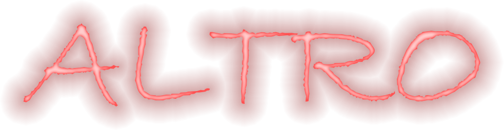
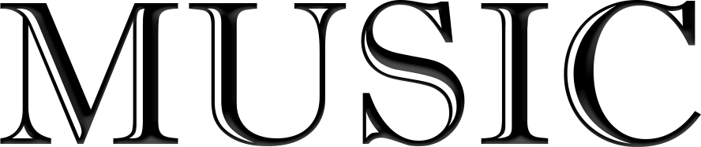

Grafica 1: Astratto in Blu
Un'emozionante fusione di forme geometriche e tonalità di blu che si combinano per creare un'esperienza visiva unica. Le sfumature e i contrasti in questa composizione la rendono assolutamente straordinaria.

Grafica 2: Natura Vivida
In questa meravigliosa opera d'arte, celebriamo la magnificenza della natura attraverso una tavolozza di colori vivaci. Ogni dettaglio, dalle venature delle foglie ai petali dei fiori, è reso con incredibile realismo, trasportando lo spettatore in un mondo di pura bellezza.

Grafica 3: Tramonto Surreale
In questa suggestiva rappresentazione, catturiamo la magia di un tramonto surreale. I colori ardenti del cielo si fondono con la calma del mare, creando un'atmosfera di tranquilla contemplazione e meraviglia.